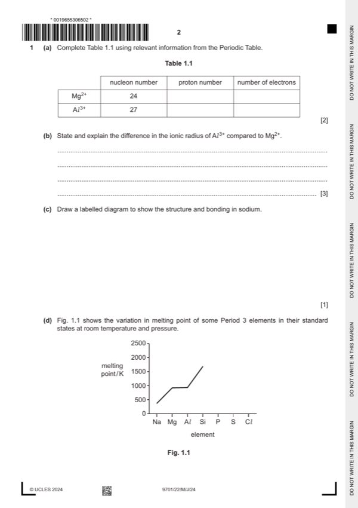

Question 1

Original paper page 2
Part 1(a) — solution
Answer: 2
2
Mg2+ 24 12 10
Al3+ 27 13 10
Mark points
- Correct result: 2
Part 1(b) — solution
- [M1] it / Al 3+ is smaller (compared to Mg2+) 3
- [M2] greater nuclear attraction for remaining electrons
- [M3] same shielding effect AND greater nuclear charge
Mark points
- [M1] it / Al 3+ is smaller (compared to Mg2+) 3
- [M2] greater nuclear attraction for remaining electrons
- [M3] same shielding effect AND greater nuclear charge
Part 1(c) — solution
- regular arrangement of minimum of 2 2 circles containing + for positive ions
- AND surrounded by (sea of) delocalised electrons
Mark points
- regular arrangement of minimum of 2 2 circles containing + for positive ions
- AND surrounded by (sea of) delocalised electrons
Part 1(d)(i) — solution
large amount of energy required to break bonds in giant covalent structure 1
University Press & Assessment 2024 Page 6 of 13
9701/22 Cambridge International AS & A Level – Mark Scheme May/June 2024
Mark points
- Include the ideas shown in the solution above.
Part 1(d)(ii) — solution
Answer: 2
- [M1] all 3 melting points lower than Mg
- [M2] show melting point Cl < P < S
Mark points
- [M1] all 3 melting points lower than Mg
- [M2] show melting point Cl < P < S
Part 1(e)(i) — solution
Answer: 2
2
Na solid 10–14
S gas 0–4
Mark points
- Correct result: 2
Part 1(e)(ii) — solution
acid–base OR neutralisation 1
Mark points
- Include the ideas shown in the solution above.
Part 1(e)(iii) — solution
- P4O10 + 6H2O → 4H3PO4 1
Mark points
- P4O10 + 6H2O → 4H3PO4 1
Part 1(f)(i) — solution
reacts with both acids and bases OR shows both acidic and basic behaviour 1
Mark points
- Include the ideas shown in the solution above.
Part 1(f)(ii) — solution
- Al (OH)3 + NaOH → NaAl (OH)4 1
Mark points
- Al (OH)3 + NaOH → NaAl (OH)4 1